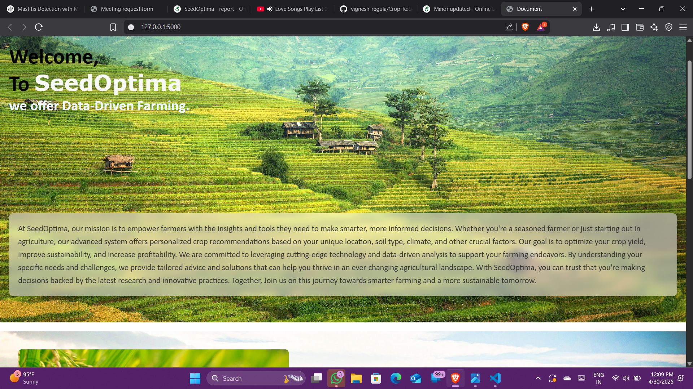

Crop Recommendation System
A Crop Recommendation System is an intelligent tool that helps farmers decide which crop to grow based on various environmental and soil conditions. It typically uses machine learning models. The system takes these inputs and predicts the most suitable crop to maximize yield and resource efficiency. It supports smart farming by reducing trial-and-error, increasing productivity, and encouraging sustainable agriculture practices.
Frameworks & Libraries
Languages

Working
GitHub Repository
Repository Name
Crop-Recommendation-Growth-System
Description
A machine learning-based web application that recommends the most suitable crop to grow based on soil nutrients (N, P, K), temperature, humidity, rainfall, and pH. This system aims to assist farmers and agricultural planners in making data-driven decisions to improve crop yield and promote sustainable farming practices.